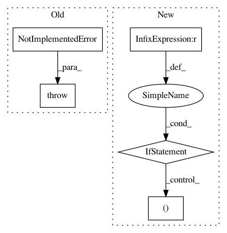

91a9437c8c6ed68d14884cc040c988301a7430ea,src/graph_transpiler/webdnn/frontend/chainer/functions/normalization.py,,_convert_normalize_l2,#,11
Before Change
@ChainerConverter.register_handler("NormalizeL2")
def _convert_normalize_l2(converter: ChainerConverter, c_op: "chainer.functions.NormalizeL2"):
// TODO
raise NotImplementedError("[ChainerConverter] NormalizeL2 is not supported")
@ChainerConverter.register_handler("LocalResponseNormalization")
def _convert_local_response_normalization(converter: ChainerConverter,
After Change
def _convert_normalize_l2(converter: ChainerConverter, c_op: "chainer.functions.NormalizeL2"):
x = converter.get_variable(c_op.inputs[0])
if len(c_op.axis) > 1: // c_op.axis: tuple
raise ValueError("The number of axis for NormalizeL2 must be 1.")
y, = Normalize(None, axis=x.order.axes[c_op.axis[0]], eps=c_op.eps)(x)
converter.set_variable(c_op.outputs[0](), y)
In pattern: SUPERPATTERN
Frequency: 3
Non-data size: 5
Instances
Project Name: mil-tokyo/webdnn
Commit Name: 91a9437c8c6ed68d14884cc040c988301a7430ea
Time: 2019-06-25
Author: hidaka@mi.t.u-tokyo.ac.jp
File Name: src/graph_transpiler/webdnn/frontend/chainer/functions/normalization.py
Class Name:
Method Name: _convert_normalize_l2
Project Name: explosion/spaCy
Commit Name: 1612990e888385df9dd4bab28071b0ff4ed69745
Time: 2019-03-20
Author: honnibal+gh@gmail.com
File Name: spacy/cli/pretrain.py
Class Name:
Method Name: get_vectors_loss
Project Name: tensorflow/privacy
Commit Name: f8515dfd719c081e30a56348bd47ce4c6c65f3e8
Time: 2020-08-12
Author: gardener@tensorflow.org
File Name: tensorflow_privacy/privacy/membership_inference_attack/models.py
Class Name: TrainedAttacker
Method Name: predict